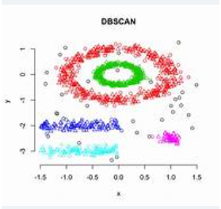

🔠What is DBSCAN?
DBSCAN is an unsupervised, density-based clustering algorithm that discovers clusters of
arbitrary shape and identifies noise (outliers).
Unlike K-Means, it does not require you to specify the number of clusters in advance.
⚙️ Key Parameters
- ε (epsilon): Radius that defines a point’s neighborhood.
- minPts: Minimum number of points required to form a dense region (core point).
🪜 How DBSCAN Works (High-Level)
- Pick an unvisited point.
- Retrieve all neighbors within
ε.
-
If the point has ≥
minPts neighbors → start a new cluster
• Mark point as a core point
• Recursively add reachable neighbors
- Else mark the point as noise (may later become a border point).
- Repeat until every point has been visited.
🖼️ DBSCAN Visualization

Clusters of arbitrary shape with noise points (gray)
📊 Typical Applications
- Anomaly or fraud detection
- Geospatial clustering (e.g., grouping GPS coordinates)
- Image segmentation based on pixel density
- Customer behavior pattern discovery
✅ Advantages
- Finds clusters of arbitrary shape
- Automatically detects noise and outliers
- No need to pre-set number of clusters
âš ï¸ Limitations
- Parameter choice (
ε, minPts) can be tricky
- Struggles with clusters of varying densities
- Performance degrades in very high-dimensional spaces